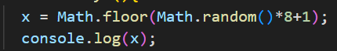

Vi skulle lave en hjemmeside der kunne bruges som quiz eller flashcard. Her skal vi kombinerer databaser med hjemmesideprogrammering.
Vi startede med at finde ud hvad vi gerne ville lave. Vi blev inspireret af quizlet, hvor vi har flashcards til at studere, danske og franske ord. Derfor lavede vi et regneark hvori der var vores primær nøgle, som var 1 til 5. Herefter skrev vi nogle attributer, til vores enititet. Man kan se regnearket her:
Her er der muligt at se de forskellige attributer: dansknavn, fransknavn og konjunktioner. Disse attributer kalder vi på senere til at få den information der står ved dem.
Herefter arbejde vi på at vores program skulle vælge en tilfældig primærnøgle. Måden vi gjorde dette ved var ved ændre på vores x værdi, ved at bruge dette:

Der bliver altså brugt math.random til at vælge et tal mellem 0 og 1 som vi derefter ganger med 8 fordi vi har 8 primær nøgler. Herefter plusser vi med 1 fordi den runder ned så på denne måde kan vi få alle nøgler med.
Databaser kan nomaliseres ved at have en relationsdatabase. Når man fx har en list over hunde og hundeejer, problemet opstår når en hundeejer har flere hunde, fordi der ikke skal gentages navne. Derfor kan man lave et relationstabel der giver adgang til mange til mange relation. Det betyder at hver person og hund har et id.
På denne måde sikre man at en person kan have mange hunde og en hunde kan have mange ejere. Da vores program ikke brug for flere tabeller, bliver der brugt 1 til 1 relation, da vores entiteter har attributer der ikke kan påvirke hinanden.
Link til database program